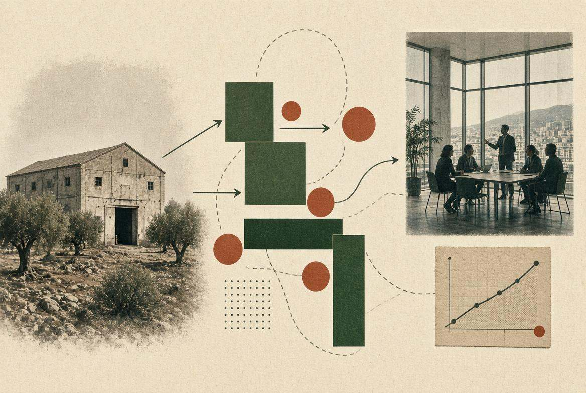

Assessment
Il primo passo quando il problema non è ancora chiaro: dove si ferma davvero il processo, il prodotto o la filiera, e cosa conviene fare per primo.
Per aziende
Impostiamo il progetto, scegliamo con voi i partner giusti nella nostra rete e seguiamo l’esecuzione fino al risultato. Il lavoro operativo lo fanno loro; noi non prendiamo commissioni dai fornitori: le nostre indicazioni restano indipendenti.
Il primo incontro è gratuito. Se c’è un lavoro da fare, segue un preventivo.

Cosa facciamo per le aziende
Ogni progetto parte da un primo incontro gratuito. Si procede in tre tempi, capire, impostare, attivare la rete, e usiamo solo i pezzi che servono davvero. Poi vi mandiamo un preventivo. Chi fa il lavoro operativo lo scegliamo con voi nella rete TNV.
Capire
Il primo passo quando il problema non è ancora chiaro: dove si ferma davvero il processo, il prodotto o la filiera, e cosa conviene fare per primo.
Una seconda opinione senior sulle scelte tecnologiche: cosa comprare, cosa costruire, cosa lasciare stare, e con chi.
Impostare
Definiamo con voi la strategia su bandi e finanza agevolata e coinvolgiamo professionisti della nostra rete che preparano le domande. Noi restiamo sulla direzione.
Quando serve una startup che copra un vuoto di prodotto, processo o filiera, fino a PoC, integrazione o partnership.
Da dove partire, quali partner scegliere, come seguire l’esecuzione. Senza vendervi software.
Attivare la rete
Ricerca dei profili e un processo di hiring che non perde i candidati per strada. Linea di Adelaide Lai.
Corsi costruiti sul mestiere che serve: team interni, nuove competenze, AI per chi lavora.
Per imprese e team che vogliono radicarsi in Sardegna: sede, visti, casa, banca, incentivi, prime assunzioni.
Come lavoriamo
E non prendiamo commissioni dai fornitori che vi presentiamo.
Un problema abbastanza concreto da poterci lavorare: una posizione aperta, un processo lento, un prodotto da integrare, una competenza che manca, un trasferimento da rendere reale.